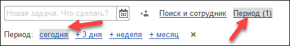
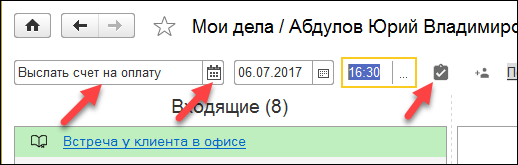

Автоматизированное рабочее место Мои дела
АРМ Мои дела — это интерактивная карта занятости. АРМ реализовано в виде канбан-доски, на которой располагаются дела в виде канбан-карточек. Слово «канбан» переводится с японского как «рекламный щит». Оно пришло с завода Toyota, где так называют систему организации производства. Использование канбан-доски для управления делами описано в книге “Personal Kanban: Mapping Work | Navigating Life” Джим Бенсон и Тониан Де Мариа Бэрри.
Авторы книги формулируют два главных правила управления личными делами:
1. Нужно визуализировать свой рабочий процесс.
2. Необходимо ограничить количество задач, над которыми вы работаете активно.
Выполнение этих правил позволяет оценить реальную загруженность, чтобы не брать лишние обязательства. А так же учит не распыляться на второстепенные, не важные в данный момент задачи.
Общие принципы работы в АРМ Мои дела
В АРМ отображаются дела пользователя программы. Руководитель подразделения также может просматривать дела своих подчиненных. Настройка прав доступа описана в документе "Механизм доступа к данным других пользователей".
Рабочая область АРМ разбита на 4 колонки: Входящие, Отложенные, Текущие и Завершенные. В каждой колонке отображаются карточки с описанием дел.
Колонка Входящие содержит следующие дела:
· Входящие электронные письма, которые не были привязаны к документу Интерес клиента.
· Телефонные звонки, которые не были привязаны к документу Интерес клиента.
· Поручения и задачи бизнес-процессов .
· Документы Интерес клиента, переданные другими пользователями.
Пользователь принимает или откладывает дела из колонки Входящие, перенося их карточки в соответствующую колонку. При этом для обработки писем и звонков автоматически создается личная задача.
Колонка Текущие, кроме принятых в работу дел, также содержит запланированные пользователем дела (личные задачи и документы Интерес клиента, находящиеся в работе).
Пользователь, работая в АРМ, откладывает или завершает дела, перенося их карточки из колонки Текущие в колонки Отложенные или Завершенные.

АРМ Мои продажи в режиме Канбан
Отображение в АРМ запланированных и просроченных дел
При работе с АРМ можно ограничить период, за который будут отображаться запланированные дела. Для этого нажмите гиперссылку Период и выберите дела запланированные на сегодня, на ближайшие три дня, неделю или месяц.

Настройка периода просмотра запланированных дел
Просроченные дела не скрываются, но отображаются ниже запланированных дел.
Создание новой личной задачи
Пользователь может запланировать новое дело, создав новую личную задачу. Для этого необходимо ввести текст задачи в поле Новая задача, выбрать дату исполнения и нажать на кнопку .

Создание новой личной задачи
Режим отображения Список
Когда дел много, те, которые находятся в работе, можно посмотреть в виде списка. Для этого переключите режим отображения, нажав на кнопку Список. В данном режиме отображаются по хронологии все дела, кроме завершенных.